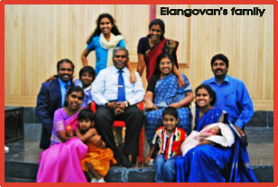

I will give you hidden treasures, riches stored in secret places, so that you may know that I am the LORD, the God of Israel, who summons you by name.
Isaiah 45:3
ICRM was founded in 1977 at Devashola, in the Nilgiris, Tamil Nadu, South India
It was started with the Vision - Revival in India & back to Jerusalem. It's mission were 5 fold:
- Apostle R. John Elangoven (Founder & President)
110 men & women are working as Full-Time ministers in Tamil Nadu, Karnataka, Andhra & Orissa.
The Goals of ICRM organization are as follows:
Apostle R. John Elangoven has authored the following books:
John Elangoven resigned the job on 1st March 1977 when God called him for the ministry. After resignation he waited upon God for eight months. Then the Lord asked him to go to Niligiris Hills & start church ministry to which he obeyed.

He then founded a ministry called "Prayer for Revival" & organized 40 days chain fasting all over India. He also conducted seven days, five days & three days fasting prayers in which hundreds of people attended. He toured all the 27 districts of Karnataka twice in 2001 with a team of intercessors & conducted fasting prayer & prayer seminars. He is the founder-director of "Payer for Nations" which aims to promote prayer force for spiritually needy nations in the world.